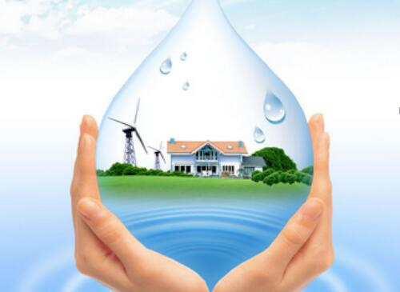
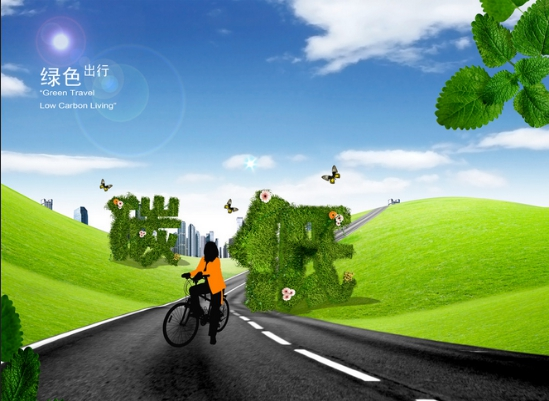

一、从家庭用电开始，节约每一度电，杜绝家家电污染。
a、把白炽灯改成第四代LED绿色光源，在同样的亮度下，其耗电量只是白炽灯的十分之一，但寿命却是白炽灯的50倍。
b、要选用无氯绿色环保家电和太阳能家电系列，比如：使用太阳能发电器、太阳灶、太阳能灯、太阳能帽、太阳能手电筒、太阳能干燥器、太阳能热水器、地板采暖系统等，既节能环保，又安全方便，既为国家的节能环保工作做出贡献，又使家庭引导了绿色生尚生活新潮流。
c、选购空调时要考虑最适合房间大小的匹数。而且夏季空调温度设定在26－28℃。
d、冰箱内贮存食物不宜过满，冰箱内食品之间及食品与箱壁之间应留有100mm以上的空隙。 这比紧贴墙面每天可以节能20％。
e、洗衣机的耗电量取决于使用时间的长短，一般合成纤维和毛丝织物洗涤3～4分钟，棉麻织物洗涤6～8分钟，极脏的衣物洗涤10～12分钟。
f、电视机不要开得很亮，音量也不宜过大，因为每增加1瓦音频功率，就要增加3～4瓦电功耗。
g、使用电饭锅最好提前淘米，用温水或热水煮饭，这样可以节电30％。
h、电饭锅用后立即拔下插头，当锅内温度下降到70摄氏度以下时，它会断断续续地自动通电，既费电又会缩短使用寿命。
二、节约生活中的每一滴水，努力减少水污染。
推广使用节水型水阀和卫生洁具；用水完毕随手关闭龙头，别让水空流；随时检查维修水龙头阻止滴漏；提倡一水多用，让水重复使用；节约用水，用洗菜、淘米水冲厕所、浇花；洗衣服使用无磷洗衣粉，减少污染；如果将漂洗的水留下来做下一批衣服洗涤水用，一次可以省下30-40升清水；慎用清洁剂，尽量用香皂，别让水源污染，时时告诫我们自己，保护水源就是保护生命！
三、节约每一张纸，使用再生纸和节约用纸,保护森林资源。
四、节约每一升油，减少空气污染源。
减少对机动车的依赖，近距离出行尽可能使用自行车或者步行，给城市的交通减轻一点负重；减少公务用车，在不影响公务，确保安全的前提下减少独自用车；紧急公务活动确需使用公务车辆时，尽量集中乘坐。让我们人人来做公交族，个个争当自行车骑手！
另外，如果是自己开车，可掌握以下节能环保技巧：1、如果开车时巧用空挡滑行，一辆1.6升排量的家用轿车每月可以节约10升汽油；2、起步时离合器不能松得太快，否则既耗油又易熄火；3、提高速度时应轻加油门；4、在遇红灯或前方车辆刹车时，不要高挡冲到跟前时才猛踩刹车；5、汽车行驶过程中，要注意看水温表，发动机正常的水温应保持在80摄氏度至90摄氏度之间，如果过高或不足都会使油耗增加；6、时常检查轮胎的气压，以保持在最佳状态，轮胎气压不足会增加耗油量；7、不要随意更换轮胎的大小，选择更宽的轮胎或许让车看来更有“跑车味”，但轮胎越宽，车轮阻力越大，燃油消耗量就越多；8、用黏度最低的发动机油。发动机油黏度越低，发动机就越“省力”，也就越省油；9、不要热身过度。有些车主喜欢在早上开车前，先热身再上路，但热身太久会更耗油，可以先让车慢慢行驶一两千米来达到热身效果；10、不要超速。对一般汽车而言，80公里的时速是最省油的速度，有统计表明，每增加1公里的时速，耗油量会增加0.5%。还有一些节油窍门是在驾驶之外的：轮胎气压不足会增加耗油量；尽量用黏度低的发动机油，这样也能省油；开启空调要确保窗门紧闭；定期清洗隔离尘网可以节省30％的电力。
五、少用一次性制品，保护地球环境和生态平衡。
六、自备购物袋，减少白色污染。
七、注意日常生活小细节。
1、烧菜做饭少用煤炉，改用液化气，炒菜时不要等油热得冒烟时才放菜，尽量减少空气污染。
2、家中的阳台上多种花草盆景，经常打扫房间，经常晒被，保持家庭环境空气清新怡人。
3、减少噪音污染，尽量减低说话或录音机播放时的音量。
4、正确处理废弃物，对生活垃圾进行分类，合理排放生活用水。
5、保护野生动植物，不吃野生动物，不穿皮草制品，保护生态平衡。
6、奉劝家人、亲友不吸烟，不随意焚烧垃圾，维护家人身体健康，保持洁净环境。
7、塑料瓶、废纸等收集起来卖给收废站，减少垃圾排放。
8、家中养的宠物要看管好，防止影响邻居休息及粪便污染，维护和谐的生活社区和环境。
9、洗米水可浇花或洗菜、冲厕所。
10、将废电池投入回收箱或收集送往回收站。